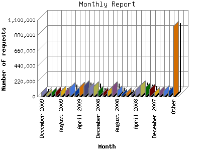

Analog 5.1
Analog 5.1 Report Magic 2.21
Report Magic 2.21The Monthly Report identifies activity for each month in the report
time frame. Remember that each page hit can result in several server requests
as the images for each page are loaded.
Note: Depending on the
report time frame, the first and last months may not represent a complete
month's worth of data, resulting in lower hits.

| Month | Number of requests | Number of page requests | |
|---|---|---|---|
| 1. | August 2005 | 15,614 | 5,852 |
| 2. | September 2005 | 37,497 | 13,096 |
| 3. | October 2005 | 30,813 | 11,177 |
| 4. | November 2005 | 26,648 | 10,428 |
| 5. | December 2005 | 32,087 | 12,658 |
| 6. | January 2006 | 52,761 | 20,844 |
| 7. | February 2006 | 42,185 | 18,021 |
| 8. | March 2006 | 43,888 | 16,235 |
| 9. | April 2006 | 27,633 | 12,960 |
| 10. | May 2006 | 23,725 | 9,613 |
| 11. | June 2006 | 28,359 | 12,396 |
| 12. | July 2006 | 20,079 | 8,700 |
| 13. | August 2006 | 43,534 | 13,680 |
| 14. | September 2006 | 55,326 | 19,533 |
| 15. | October 2006 | 40,165 | 15,178 |
| 16. | November 2006 | 36,150 | 13,013 |
| 17. | December 2006 | 35,664 | 13,955 |
| 18. | January 2007 | 60,484 | 21,270 |
| 19. | February 2007 | 58,468 | 19,244 |
| 20. | March 2007 | 93,135 | 16,356 |
| 21. | April 2007 | 68,113 | 9,385 |
| 22. | May 2007 | 45,251 | 6,487 |
| 23. | June 2007 | 36,697 | 7,140 |
| 24. | July 2007 | 26,799 | 6,989 |
| 25. | August 2007 | 35,094 | 6,274 |
| 26. | September 2007 | 80,773 | 6,843 |
| 27. | October 2007 | 88,136 | 7,365 |
| 28. | November 2007 | 77,452 | 6,755 |
| 29. | December 2007 | 58,631 | 7,685 |
| 30. | January 2008 | 107,823 | 16,004 |
| 31. | February 2008 | 132,170 | 10,926 |
| 32. | March 2008 | 155,752 | 13,824 |
| 33. | April 2008 | 103,646 | 10,286 |
| 34. | May 2008 | 32,222 | 5,526 |
| 35. | June 2008 | 49,055 | 6,724 |
| 36. | July 2008 | 34,557 | 6,191 |
| 37. | August 2008 | 84,350 | 11,836 |
| 38. | September 2008 | 143,277 | 14,607 |
| 39. | October 2008 | 79,649 | 9,306 |
| 40. | November 2008 | 59,817 | 7,000 |
| 41. | December 2008 | 77,672 | 7,633 |
| 42. | January 2009 | 145,431 | 16,513 |
| 43. | February 2009 | 127,783 | 12,708 |
| 44. | March 2009 | 156,022 | 15,586 |
| 45. | April 2009 | 137,446 | 10,576 |
| 46. | May 2009 | 72,182 | 7,236 |
| 47. | June 2009 | 128,005 | 10,544 |
| 48. | July 2009 | 77,669 | 8,055 |
| 49. | August 2009 | 82,609 | 10,381 |
| 50. | September 2009 | 72,163 | 12,770 |
| 51. | October 2009 | 55,267 | 10,886 |
| 52. | November 2009 | 46,257 | 7,557 |
| 53. | December 2009 | 61,681 | 7,052 |
Most active month January 2007 : 21,270 pages sent. 156,022 requests handled.
Monthly average: 11,299 pages sent. 66,861 requests handled.
This report was generated on December 27, 2009 18:35.
Report time frame August 17, 2005 20:39 to December 27, 2009 23:58.
| Web statistics report produced by: | |
| Analog 5.1 | Report Magic 2.21 |